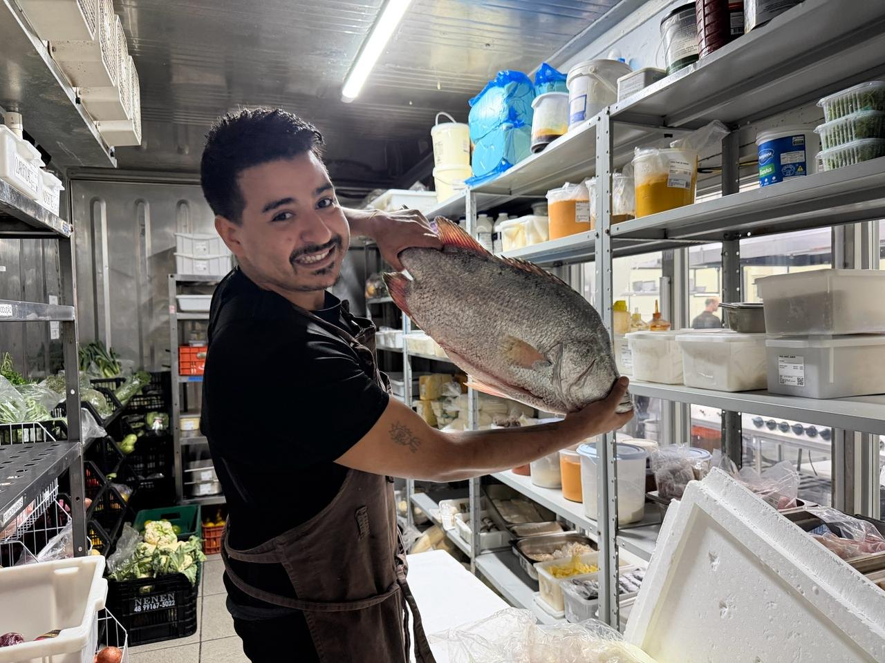
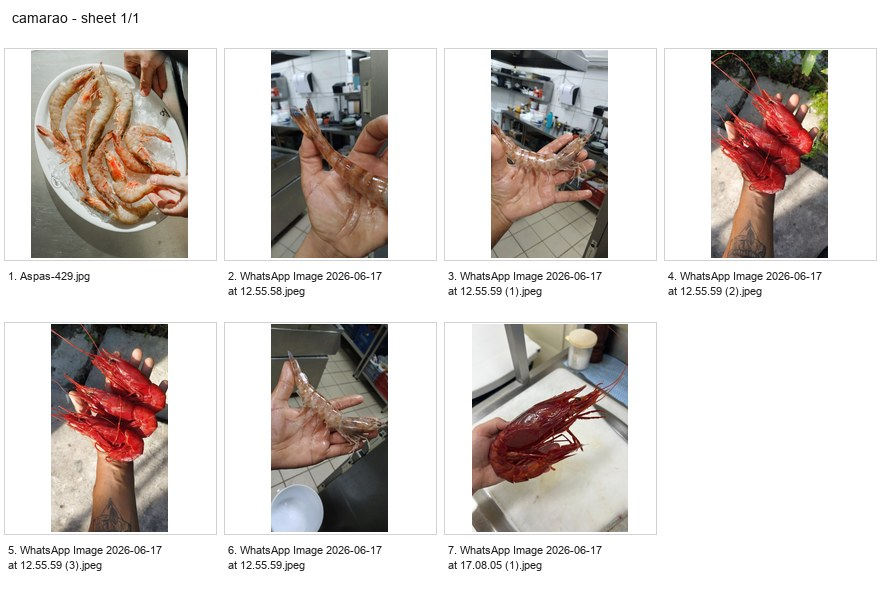

Fundamentos da Manipulação
Limpeza fria e manipulação inicial do pescado.

Edição fotográfica
Texto e fotografia de Matheus Felipe Silverio
Role para folhear · setas do teclado navegam · clique nas fotos para ampliar
Apresentação
Aqui mostro o básico, sem enrolação. O objetivo não é executar nem montar o prato — é manipular o pescado e os frutos do mar para entregar o melhor insumo para os processos seguintes. Vamos aprender a "fazer um trabalho dificil" com classe.
Meu nome é Matheus Felipe Silverio, tenho 13 ano de experiencia em restaurantes mediterrâneos, orientais e frutos do mar, 30 anos de idade, trabalho com manipulação de pescados e frutos do mar em Itajai-SC, sou responsável da setor “peixaria” no aspas restaurante na praia brava, estou á 3 anos junto com o chefe Gabriel Aguilar, na qual a proposta é a entrega desde o recebimento, manipulação ao porcionamento final dos pescados e fruto do mar, junto com maturação e defumação, aonde priorizo o cuidado com o melhor insumo que nossa costa nos proporciona.
Nesses 3 anos de trabalho intenso, desde toneladas de pescados e frutos do mar até cerimônia kaitai (atum de 100 kg direto da espanha), peixes inimagináveis de diferentes qualidades, diferentes espécies, fora as diversas adaptações e mudanças na forma de trabalhar, hoje trago a conjuntura de 13 anos de anotações e reflexões e 3 anos de intenso trabalho numa peixaria de um chefe que me possibilita sempre mudar e aprimorar. Esse documento é a forma que trabalho e como lido com um insumo tão precioso.
Limpeza fria e manipulação inicial do pescado.
Capítulo 01 · Fundamentos
Vou falar sobre osmose e as formas de usar o sal como realçador e conservador, com as devidas cautelas
O que é osmose simplificadamente, é a troca natural de água entre o alimente e o ambiente
Quando aplicamos sal em um peixe, o sal começa a puxar parte da água presente na carne para fora, mas a o mesmo tempo o sal vai penetrando no alimento, ajudando a firmar a carne, concentrando sabores e conservando o produto.


Nós conseguimos chegar à osmose pelos processos que eu cito acima, mas trabalhamos com cuidado evitando a saturação, a ideia é sempre trabalhar em baixas temperatura para sempre a absorção de sal ser menor pela contração dos poros
A solução para Limpeza: Recomendo uso de sal sem iodo. A medida exata é de 25g de sal por litro de água, acompanhada de muito gelo. Quanto mais gelada estiver a solução, mais os poros da proteína se contraem. Isso faz com que a absorção de sal seja muito menor durante a limpeza
Limites de Saturação: A proteína suporta até 5% de sal; após esse ponto, ela satura. Trabalhamos com precisão técnica para evitar o erro, pois não tem como retirar o sal depois de absorvido.
Brine (Cura): Utilizamos uma solução de 3% do peso da proteína. Dentro desses 3%, a proporção é de 70% de sal e 30% de açúcar. A cada 30g dessa mistura, adicionamos 1 litro de água. A ideia é cobrir o alimento; use uma GN que favoreça para que tudo esteja submerso na solução. Dependendo do tamanho e peso dos files de pescado a cura varia entre 2/4/8/12 hrs

Shiojime(baseada nos 3% de peso): Técnica de conservação com sal (“Shio’’ significa sal e “jime”, técnica) que extrai água residual, gorduras e sujeira, realçando o sabor e criando uma película de cura que garante durabilidade extra.
* Processo: Após o salgamento, o descanso varia de 20, 30 ou 40 minutos (dependendo do tamanho do filé). Em seguida, retire o sal em água corrente — este é o único momento em que usamos água corrente diretamente. Não esfregue o sal contra a proteína; deixe a água levar o sal e use toques leves. Logo após, coloque em uma GN ou caixa-bloco com água e gelo abundante para estabilizar a temperatura e fechar os poros. Retire e seque muito bem
A única maneira de eliminar ou diluir parcialmente os aromas voláteis (como a amônia) é por meio da acidez. Geralmente armazenamos os peixes em plásticos e no vácuo, infelizmente ambientes abafados aceleram a produção de amônia, resultando no cheiro de peixe forte, pitiú ou "FISHY FISH", eu sugiro que caso tente eliminar os aromas use uma das bases da manipulação que se conecta diretamente às nossas técnicas de conservação.
Sujime: Técnica que utiliza uma diluição de água, vinagre e gelo ("Su" significa vinagre e "jime", técnica). Usada para conservação e refinamento de sabor, eliminando aromas voláteis e criando uma pequena película proveniente da reação do vinagre na proteína. Lembrando que tudo que é acido cozinha a proteína. Trabalhamos com diluição e baixa temperatura (quanto mais frio, menor o poder de ação do ácido). A proporção é de 1 para 1: a mesma quantidade de vinagre para a mesma quantidade de água.


Bancada, cuba e ferramentas organizadas para manipulação.
Capítulo 02 · Água, Higiene e Armazenamento
Nossa manipulação não impede o uso de água, mas foca no estado final do insumo. Água residual é igual à proliferação de bactérias. Uso muito papel e muito Perflex para garantir que o insumo saia seco e seguro. Lembrando que uma geladeira própria para pescados é essencial, e também GN furadas e caixa-bloco furadas para sempre deixar o ar correr e os líquidos não ficarem parados
Para o armazenamento técnico:
Geladeira Exclusiva: O ideal é manter uma geladeira apenas para pescados, evitando contaminação cruzada e troca de odores.
Usamos GNs com furos, formas vazadas ou grades. O peixe precisa de circulação de ar para evitar a oxidação e manter a qualidade.
Você pode cobrir a GN com filme PVC, mas nunca lacre completamente. Deve haver vazão para o ar (seja por cima ou por baixo). O ambiente abafado acelera a produção de amônia, resultando no cheiro forte conhecemos como "FISHY FISH" ou PITIÚ.


Lula em caixa-bloco, ainda sob controle de frio.
Capítulo 03 · Lula
Como a indústria geralmente entrega a lula em blocos de 17kg a 22kg, o processo exige paciência e técnica:
Descongelamento Lento: O ideal é realizar o descongelamento em caixas-bloco grandes e furadas, permitindo que o líquido escorra conforme o gelo derrete.
Descongelamento de Urgência: Caso haja pressa, utilize uma caixa-bloco cheia de água e sal (nas proporções já estabelecidas nos Fundamentos). Este método é mais limpo, pois a limpeza de resíduos por osmose já começa a acontecer durante o descongelamento.


A primeira etapa da manipulação consiste em separar as partes inferiores:
Para limpar o tubo com precisão, utilizaremos uma pinça de 20 cm.

(Explicar sobre como lavar e verificar se não tem areia ou órgãos arrastando a faca sobre a lula necessitara fotos )

Polvo em gelo antes da higienização das ventosas.
Capítulo 04 · Polvo
O processo muda pouco se o polvo vier fresco e com vísceras ou já limpo pela indústria, sendo apenas mais ou menos maçante, a limpeza com sal nos “braços” tentáculos será a mesma
Sabemos que a proteína suporta até 5% de sal antes de saturar. No polvo, trabalhamos com 4% de sal em relação ao peso para lidar com a sujeira pesada e o muco.
Pese o polvo já eviscerado e calcule 4% desse peso em sal (Exemplo: 1kg de polvo = 40g de sal).
Peso do polvo X 0,04


Camarão rosa em preparo, preservando textura e integridade.
Capítulo 05 · Camarão Rosa
Descongelamento com urgência: água e sal em uma caixa-bloco, por si só a solução vai ficar gelada, basta usar essa água para descongelar regando o os camarões como são congelados um a um ele descongela rápido.
Descongelamento lento e seguro: de um dia para o outro na câmara resfriada em uma caixa-bloco furada escorrendo líquidos pelo descongelamento
Usaremos uma faca de legumes (faca pequena) e luvas para descascar e lidar com a água dele. Camarão é velocidade e cuidado com a manipulação. Procurar descascar com sutileza, como se fosse retirar uma pele sobressaltada; se forçar, o machuca.


Lembrando que no camarão e sua estrutura dorsal teremos as ovas junto com as fezes. É nítida a diferença: a ova é mais macia e esverdeada; as fezes são uma linha pretinha meio firme. Aliás, ovas são comestíveis.
Basicamente tudo liga do rabo à cabeça. Lembrando que onde é o ligamento do corpo com a cabeça, ali se encontra o estômago. Eu não gosto muito e retiro quando está exorbitante. Caso vá usar sem cabeça, basta remover toda a cabeça e reservar para caldo e afins.




Mexilhões abertos, evidenciando concha e carne.
Capítulo 06 · Mexilhão
É um dos mariscos com que trabalhamos mais consumidos e “chatos “de se trabalhar; o importante é tentar deixar essa caminhada mais fácil.
O marisco é composto por duas conchas e um músculo que se projeta para fora, algo semelhante a cabelos, que chamamos de "umbigo". Ele é ligado a um conjunto de músculos dentro do marisco. Quando retirado com muito cuidado, segurando levemente as conchas e deixando apenas uma pequena fresta por onde você vai puxar essa conjuntura de "cabelinhos", o "umbigo" sai sem machucar o molusco.
Para abrir com cautela, é importante entender que o marisco tem um músculo principal que se liga às duas conchas. Passamos a faca bem triscando na casca por dentro; assim, ele se abre na totalidade. O ponto fraco do marisco é ali. Evite quebrar a casca, evite força, evite machucados.
Ainda sobre as conchas, é interessante limpar o externo antes de limpar o interno. O marisco é sujo, tem berbigões e cracas provenientes do ambiente do bicho. Eu aconselho limpar depois de cozinhar; as cracas saem mais fácil pela dilatação e contração da concha. É ideal entender que as conchas têm faces e fazer a faca correr sempre para fora. Importante entender que o marisco faz sujeira; faça embaixo de uma caixa-bloco.